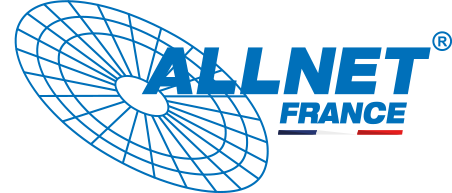
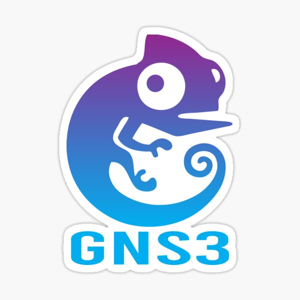
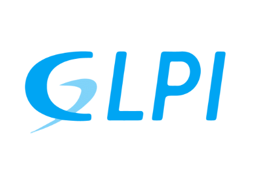
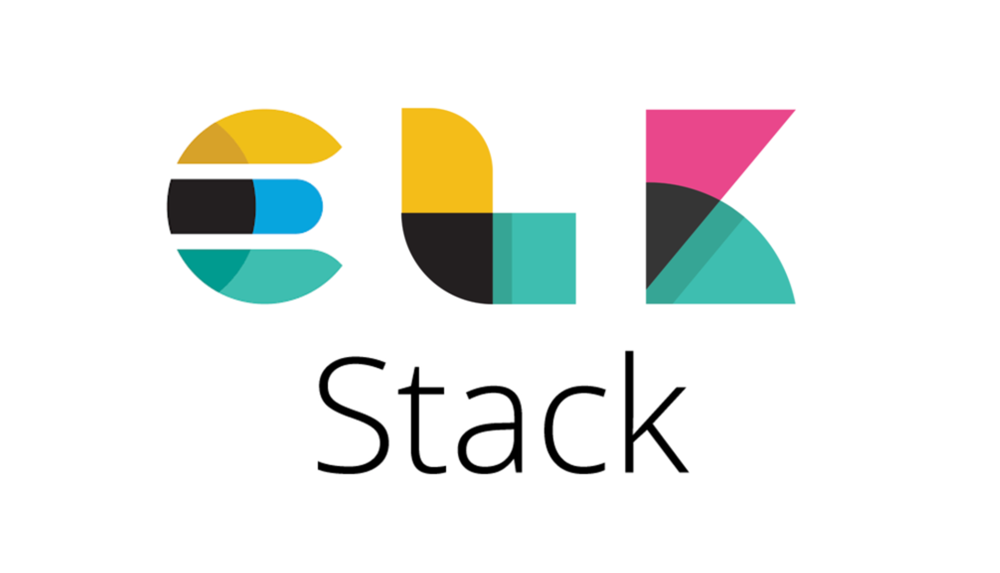
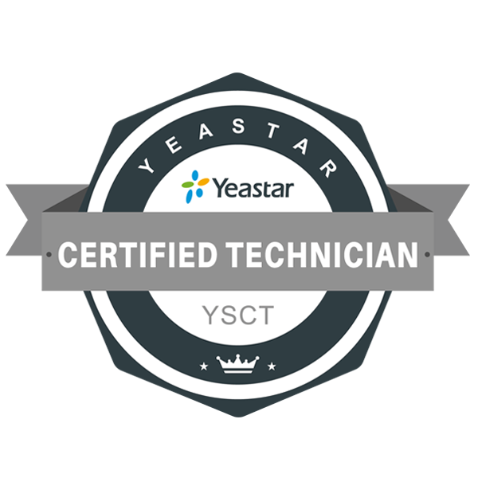
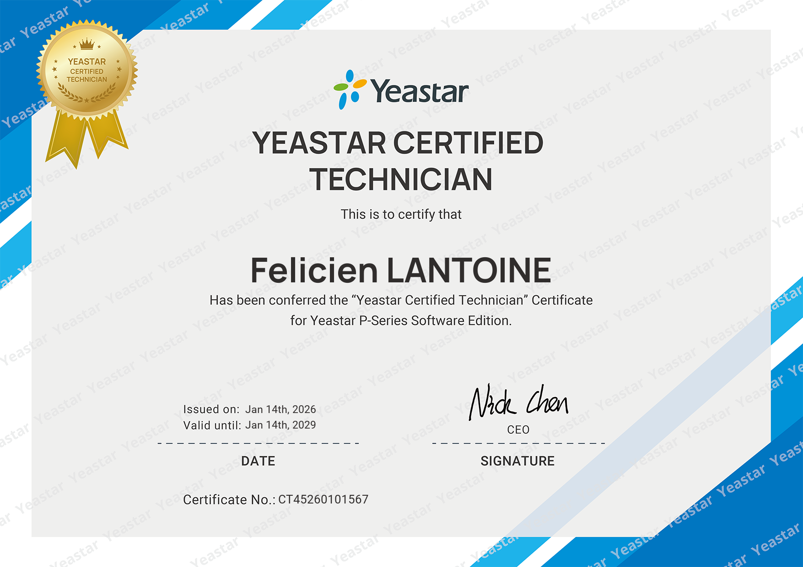

AllNet France est une entreprise spécialisée dans l’intégration de solutions informatiques, réseaux et télécoms à destination des professionnels. Elle accompagne ses clients dans la conception, le déploiement et la maintenance de leurs infrastructures informatiques.
Son activité couvre plusieurs domaines :
AllNet intervient auprès de différentes structures professionnelles (PME, collectivités, entreprises locales) et propose des solutions adaptées aux besoins spécifiques de chaque client. Cette diversité m’a permis de découvrir des environnements techniques variés et concrets.

Ce stage s’inscrit dans le cadre de ma formation en BTS SIO option SISR. Il avait pour objectif de me confronter à un environnement professionnel réel et de participer au déploiement de solutions systèmes, réseaux et télécoms.
Mise en place d’un environnement de simulation réseau avec GNS3 afin de tester des configurations et des équipements avant déploiement réel.

Installation et configuration de GLPI afin d’assurer la gestion, le suivi et la structuration de l’inventaire du parc informatique.

J’ai conçu et déployé un serveur de centralisation des logs et de supervision basé sur la stack ELK (Elasticsearch, Logstash, Kibana, Packetbeat), permettant la collecte, l’analyse et la visualisation des événements réseau.
Cette solution permet la centralisation multi-VLAN, la détection d’anomalies et la mise en place d’un mini SOC de supervision réseau.

J’ai participé à l’installation et à la configuration d’un PBX Yeastar P560 afin de mettre en place une infrastructure de téléphonie IP avec gestion des files d’attente et tests de performance.
Des tests de performance ont été réalisés avec SIPp afin de simuler des appels entrants massifs vers plusieurs files d’attente, permettant de valider le comportement du PBX en conditions réelles (centre d’appel).
Dans le cadre de la mise en place du PBX Yeastar P560, j’ai suivi une formation officielle Yeastar me permettant d’approfondir mes compétences en téléphonie IP et en configuration avancée de solutions PBX.
À l’issue de cette formation, j’ai passé et obtenu la certification YSCT (Yeastar Certified Technician), attestant de ma capacité à installer, configurer et maintenir des solutions Yeastar en environnement entreprise.


Ce stage de deuxième année m’a permis d’apprendre de nombreuses choses, tant sur le plan technique que professionnel. J’ai pu développer mes compétences en administration systèmes et réseaux à travers des projets concrets tels que la mise en place d’un outil de gestion de parc, d’un serveur de supervision et d’une infrastructure de téléphonie IP.
J’ai notamment approfondi mes connaissances dans le domaine de la téléphonie sur IP grâce à l’installation et à la configuration d’un PBX Yeastar, ainsi qu’à l’obtention de la certification YSCT. Cette expérience m’a permis de mieux comprendre le fonctionnement des infrastructures VoIP en environnement professionnel.
Ce stage m’a également permis de gagner en autonomie, en rigueur et en capacité d’analyse face à des problématiques techniques réelles. Il constitue une expérience déterminante dans ma formation et me sera particulièrement utile pour la poursuite de mes études et mon évolution future dans le domaine des systèmes et réseaux.